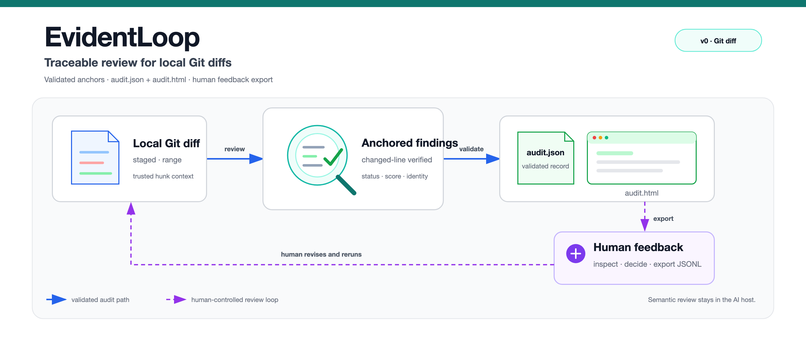

EvidentLoop
Turn a local Git diff into one HTML report. Findings link to real changed lines, and human decisions can update the same report without re-reviewing code.

The demo uses a bundled synthetic fixture and frozen replay, not a live AI review. Install the CLI and Skill for a real audit; publish only redacted reports you intend to share.